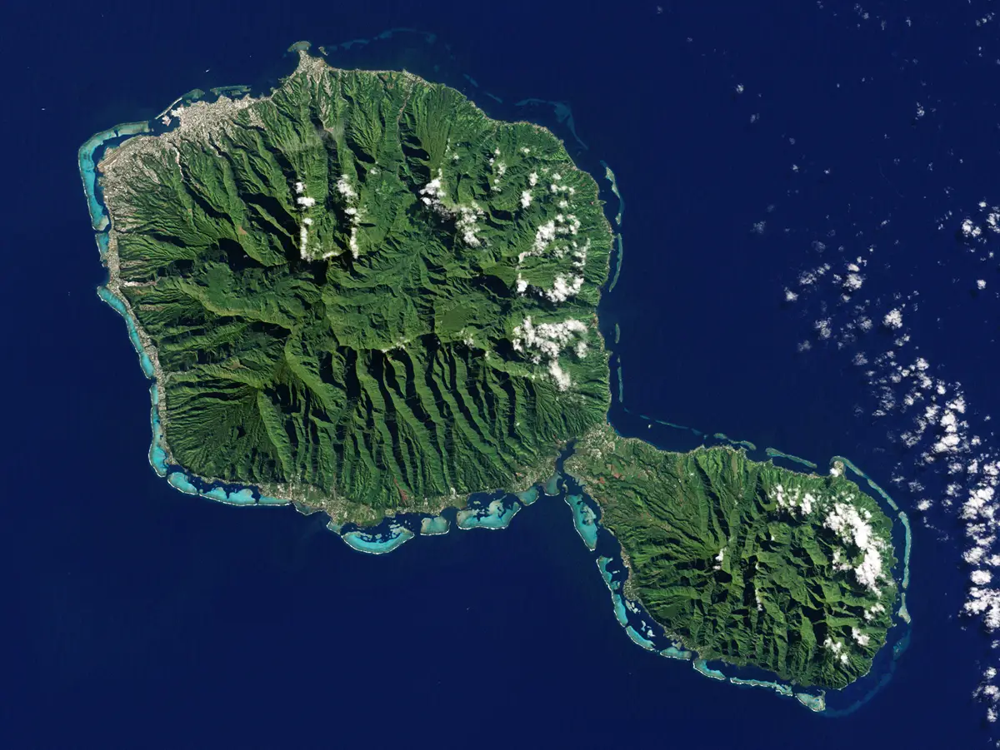

Overview
Purpose
Don't you need to travel to a new place for vacation? My goal is to help you find the best place to relax and make great memories with a place and people that are so close to my heart. Visit my website so that you can figure out how to plan for the most unforgettable experience of your life!
Audience
Everyone needs a new place to travel to and time to relax. This website will solve that issue!
Branding
Website Logo
Style Guide
Color Palette
| Primary | Secondary | Accent 1 | Accent 2 |
|---|---|---|---|
Typography
Heading Font: Cormorant
Paragraph Font: Montserrat
Normal paragraph example
Get good vacations here
Colored paragraph example
More about French Polynesia's culture
Navigation
Site Map
Content
Discover French Polynesia
Iaorana e maeva!
The message above means "Hello and welcome" in the beautiful tahitian language. French Polynesia is home to some of the most beautiful nature, landscape, and culture in the world. While some of it's islands like Bora Bora and Tahiti are already well known, it contaisn many other beauties that are not often seen, such as Moorea, Raiatea, and Rurutu. Come and discover French Polynesia with us!
The 5 Archipelagos
French Polynesia is home to 5 different archipelagos: The Society Islands, The Austral Islands, The Marquesas Islands, The Tuamotu Islands, and The Gambier Islands, each with their own unique must-see spots and cultures!
Vacation Deals
Want to get a great vacation for a good price? Check out our vacation bundles here!
Travel Information
Being in the middle of the south pacific isn't any easy ride to get to. Look around here on the best way to travel to the amazing islands!
Activities
Looking for more simple things to do each day? Here are some of our favorite things to do!
Images for the Home page


Language and Culture
The dying Tahitian language
French Polynesia has been around for a long time. However, it has become french territory only somewhat recently. Because of this, the tahitian language is becoming less and less practiced, mostly spoken only by the older folks on the islands. Here is some good survival vocabulary in Tahitian that can bring you closer with the culture and tahtian locals!
The Tahitian "R"
Much of the tahitian alphabet is not how it is in english. The "Bs" are "p" sounds, many letters make "T" sounds, and the "R" is much different as well! To make an "R" sound in tahitian, you almost make a "D" sound with your tongue going forward across the roof of your mouth while you say it. If you have trouble with it, you could even just make a "D" sound instead!
Glottal Stops
In written Tahitian, apostraphes or glottal stops are used to halt sounds to better pronounce and differentiate other words. For example, "moa" means "chicken" while "mo'a" means "holy" or "sacred". To do this, just stop the sound before continuing the word or phrase!
- Iaorana: "Hello","Good Morning", or "Good Evening", this word translates directly to "May you live!" This is the most commonly used greeting across French Polynesia.
- Eaha to'oe huru?: "How are you?" You can respond to this with "Maita'i" (well) or "Maita'i roa (very well). If you are speaking to two people, you say "Eaha to orua huru?" And if it's more than two people, "Eaha to outou huru?"
- Mauru'uru: "Thank you!"
- Na Na: "Goodbye!"
- Fa'aitoito: A commonly used phrase meaning "Good luck" or "diligence"!
Images for the Page 2


FAQ
What questions does your site answer?
Visitors to our site come with various interests and questions, seeking detailed information such as:
Where are the best places to visit in French Polynesia?
Explore renowned destinations like Bora Bora, Tahiti, Moorea, and lesser-known gems, each offering unique experiences from crystal-clear lagoons to lush mountains.
What activities can I enjoy there?
Discover a wealth of activities, including snorkeling in coral gardens, diving with manta rays, hiking to scenic viewpoints, and experiencing traditional Polynesian dance and music.
How do I plan my trip, including travel logistics and cultural experiences?
Navigate travel essentials such as visa requirements, flight options, local transportation between islands, and must-see cultural sites and events.
Where should I stay, and what accommodation options are available?
Find accommodations ranging from overwater bungalows and luxury resorts to cozy guesthouses and family-friendly hotels, ensuring there's something for every preference and budget.
What can visitors do on your site?
Your journey through French Polynesia begins here, where you can:
Explore detailed articles and guides:
Dive into our extensive collection of articles covering everything from the history and traditions of French Polynesia to practical tips on packing and local etiquette.
View stunning photos and videos:
Immerse yourself in the beauty of the islands through breathtaking visuals showcasing turquoise waters, lush landscapes, and vibrant cultural performances.
Plan your itinerary:
Whether you prefer a relaxed beach getaway or an adventure-filled expedition, use our suggested itineraries or create your own tailored plans to make the most of your trip.
Learn more about the language:
Dive deeper into the beautiful Tahitian and French languages so that you can connect more with locals.
Seek personalized advice:
Connect with us through contact forms or community forums to get insider tips, recommendations from seasoned travelers, and answers to specific queries about your upcoming trip.
What information do I need to complete actions on your site?
To ensure a seamless planning process and maximize your experience, gather essential information such as:
Clear understanding of each island's unique features:
From the luxurious escapades of Bora Bora to the volcanic allure of Tahiti, grasp what makes each island distinct and ideal for your vacation preferences.
Access to high-quality visuals:
Get inspired by our curated collection of photos and videos capturing the essence of French Polynesia, allowing you to envision your dream getaway and plan accordingly.
Seamless booking capabilities:
Enjoy hassle-free reservations for accommodations, tours, and activities directly through our platform, eliminating the need for multiple bookings and ensuring a streamlined travel experience.
Practical travel tips:
Equip yourself with practical advice on navigating local customs, understanding weather patterns, packing essentials, and ensuring a safe and enjoyable journey from start to finish.
Contact information and support options:
Stay informed with our readily available contact details and support options, ensuring prompt assistance and peace of mind throughout your travel preparations and during your stay.
Why choose your site over others?
Our commitment to providing a comprehensive and user-friendly experience sets us apart:
Insightful content:
We go beyond the surface to offer in-depth insights into both the cultural richness and the diverse array of travel opportunities awaiting you in French Polynesia.
User-friendly interface:
Navigate our website effortlessly with intuitive design and responsive features optimized for seamless browsing on any device, ensuring accessibility whether you're at home or on the go.
Captivating visuals:
Let our stunning imagery transport you to the heart of French Polynesia, capturing its natural splendor and cultural vibrancy in every frame.
Trustworthy information:
Rely on our reliable and up-to-date content, backed by thorough research and local expertise, to make informed decisions that enhance your travel experience.
Convenient booking options:
Save time and effort with our integrated booking system, offering direct access to accommodations and activities, making us your one-stop resource for all things French Polynesia.
Embark on your journey to French Polynesia with confidence and excitement—let us be your guide to creating memories that will last a lifetime.
Images for the Page 3

Wireframes
Create three wireframes for your site. One for each page and list them here
Home
Images with general information (Location, vacation plans, activities, act.)

[Page 2]
Bullet list of words and phrases, introducing the Tahitian language and more about its' culture

FAQ, list of questions and answers with nice images
[Any additional details about page 3 that the wireframe does not make clear]